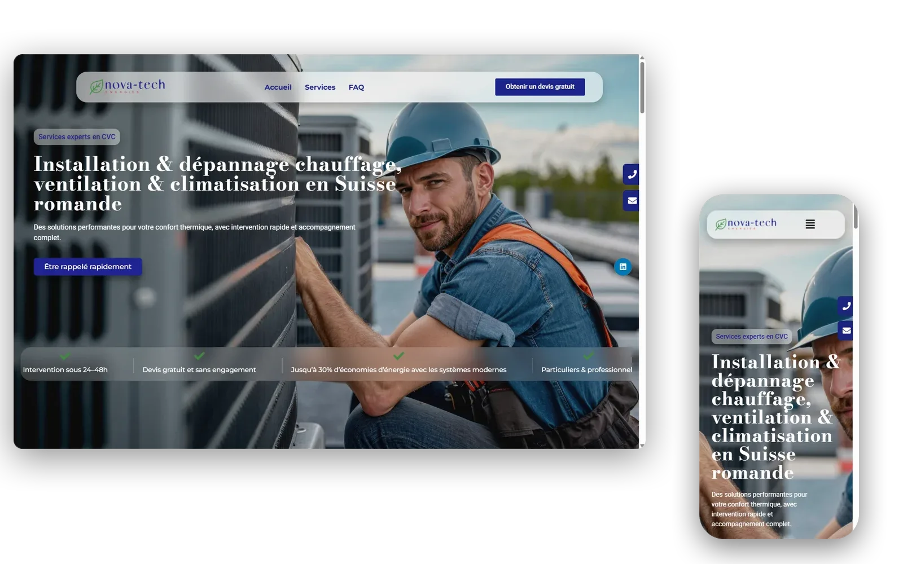

Nova-tech
Site livré pendant mon stage chez Digistylze : la landing de Nova-tech, entreprise CVC en Suisse romande. Une semaine de bout en bout : design, intégration, mise en ligne. Sur WordPress + Elementor, avec quelques sections en code custom pour ce que le builder ne savait pas faire.

Le client et le contexte
Premier vrai client confié pendant mon stage chez Digistylze à Genève : Nova-tech, entreprise de chauffage, ventilation et climatisation en Suisse romande. Mission : sortir une landing complète, depuis la maquette jusqu'à la mise en ligne. Solo sur le projet, moins d'une semaine pour livrer. C'est le pendant pro de Funiro : la même stack, mais cette fois avec un vrai client à servir.
Le vrai défi technique
WordPress + Elementor, c'est un compromis : tu vas vite sur le standard, tu galères quand tu sors du cadre. Sur la section Services par exemple, j'avais besoin d'une mise en forme que le builder ne sortait pas. Solution : coder la section en HTML/CSS custom dans un bloc Elementor. Mais avec une contrainte importante : le client devait toujours pouvoir modifier les textes et les images de cette section depuis l'interface Elementor, sans toucher au code. Ça a demandé de bien structurer le custom : variables Elementor pour les textes et les images, CSS propre par-dessus.
Ce que ça change d'un projet école
Un client réel ne lit pas ton code. Il lit le rendu, et il veut pouvoir changer un texte sans appeler personne. Donc chaque décision technique doit servir deux publics : moi qui code aujourd'hui, et le client qui maintient demain. C'est sur Nova-tech que j'ai vraiment compris ça pour la première fois.